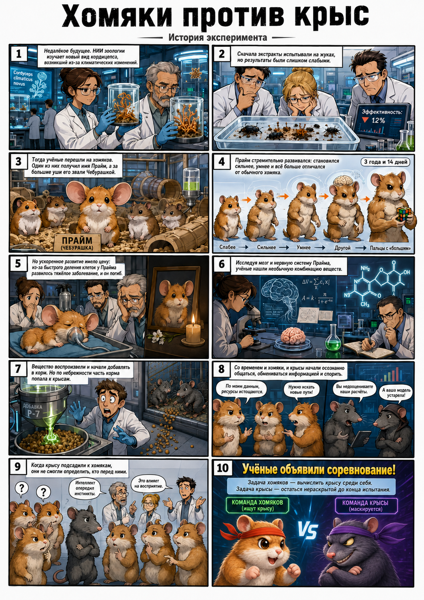

Лор игры
В недалёком будущем учёные НИИ совершили неожиданное открытие, в которое лаборанты поначалу даже не верили. Во время исследований нового вида кордицепса, появившегося вследствие изменений климата и глобального потепления, был обнаружен неизвестный генетический механизм, связанный с ускоренным развитием живых организмов.
Изначально экстракты гриба испытывали на жуках, но результаты оказались настолько скромными, что о них предпочитали не вспоминать. Тогда было принято научное и одновременно крайне экономное решение — перейти на хомяков.
Спустя некоторое время эксперимент всё же дал результат. Один из хомяков, получивший гордое имя Прайм, хотя часть сотрудников любили называть его Чебурашкой из-за чрезвычайно больших ушей, начал стремительно развиваться.
На протяжении трёх лет и четырнадцати дней он демонстрировал всё более высокие результаты в тестах, становился физически сильнее, его мозг увеличивался в размерах, морда постепенно меняла форму, а на лапах появились зачатки больших пальцев, позволявшие удерживать лёгкие предметы.
К сожалению, ускоренное развитие имело свою цену. Из-за чрезвычайно быстрого деления клеток у Прайма развилось онкологическое заболевание, и вскоре он погиб.
Тело подопытного было тщательно изучено. Особое внимание учёные уделили его нервной системе и мозгу, поскольку именно там наблюдались наиболее заметные изменения. В результате исследований была обнаружена необычная комбинация химических соединений, предположительно связанная с эффектом развития.
Полученное вещество удалось воспроизвести на основе компонентов гриба. После этого его начали добавлять в корм другим хомякам.
Однако научный прогресс редко обходится без человеческого фактора. Из-за небрежности сотрудников часть корма случайно попала в соседний вольер с крысами. Руководство института узнало об этом слишком поздно, когда и хомяки, и крысы уже начали демонстрировать признаки ускоренного развития.
Со временем подопытные достигли уровня, на котором смогли осознанно общаться друг с другом, обмениваться информацией и даже спорить.
Самым удивительным оказалось другое: когда в группу хомяков подсадили крысу, они не смогли определить, что перед ними представитель другого вида. Это было крайне странно, поскольку к этому моменту уровень интеллекта подопытных уже позволял решать логические задачи, но почему-то не позволял различать очевидные внешние отличия.
Одни учёные считали, что развитие интеллекта опередило развитие инстинктов. Другие предполагали, что вещество воздействовало на восприятие сородичей. Третьи честно признались, что сами ничего не поняли, но им было очень интересно.
Чтобы наконец выяснить, кто же оказался умнее, исследователи объявили соревнование. Правила были просты: хомякам нужно было вычислить крысу среди себя, а крысе — остаться нераскрытой до конца испытания.
P. S. Ни одно животное не пострадало в ходе данных экспериментов.
